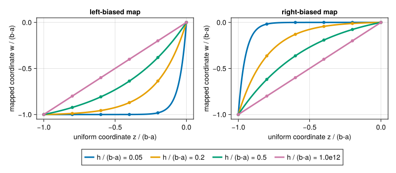
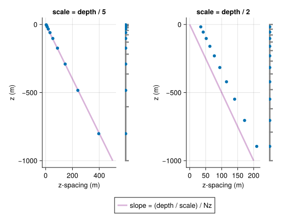
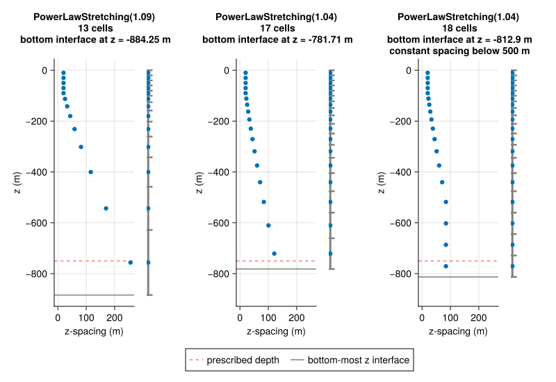

Vertical grids
A few vertical grids are implemented within the Grid Utilities module.
Exponential spacing
The ExponentialCoordinate method returns a coordinate with interfaces that lie on an exponential profile. By that, we mean that a uniformly discretized domain in the range $[a, b]$ is mapped back onto itself via either
\[z \mapsto w(z) = b - (b - a) \frac{\exp{[(b - z) / h]} - 1}{\exp{[(b - a) / h]} - 1} \quad \text{(right biased)}\]
or
\[z \mapsto w(z) = a + (b - a) \frac{\exp{[(z - a) / h]} - 1}{\exp{[(b - a) / h]} - 1} \quad \text{(left biased)}\]
The exponential mappings above have an e-folding controlled by scale $h$. It worths noting that the exponential maps imply that the cell widths (distances between interfaces) grow linearly at a rate inversely proportional to $h / (b - a)$.
The right-biased map biases the interfaces being closer towards $b$; the left-biased map biases the interfaces towards $a$.
At the limit $h / (b - a) \to \infty$ both mappings reduce to identity ($w \to z$) and thus the grid becomes uniformly spaced.
using ClimaOcean
using ClimaOcean.GridUtils: rightbiased_exponential_mapping, leftbiased_exponential_mapping
using CairoMakie
depth = 1000
zb = - depth # left
zt = 0 # right
z = range(zb, stop=zt, length=501)
zp = range(zb, stop=zt, length=6) # coarser for plotting
axis_labels = (xlabel="uniform coordinate z / (b-a)",
ylabel="mapped coordinate w / (b-a)")
fig = Figure(size=(800, 350))
axl = Axis(fig[1, 1]; title="left-biased map", axis_labels...)
axr = Axis(fig[1, 2]; title="right-biased map", axis_labels...)
for scale in [depth/20, depth/5, depth/2, 1e12*depth]
label = "h / (b-a) = $(scale / depth)"
lines!(axl, z / depth, leftbiased_exponential_mapping.(z, zb, zt, scale) / depth; label)
scatter!(axl, zp / depth, leftbiased_exponential_mapping.(zp, zb, zt, scale) / depth)
lines!(axr, z / depth, rightbiased_exponential_mapping.(z, zb, zt, scale) / depth; label)
scatter!(axr, zp / depth, rightbiased_exponential_mapping.(zp, zb, zt, scale) / depth)
end
Legend(fig[2, :], axl, orientation = :horizontal)
fig
Note that the smallest the ratio $h / (b-a)$ is, the more finely-packed are the mapped points towards the left or right side of the domain.
Let's see to use ExponentialCoordinate works. Here we construct a vertical grid with 10 cells that goes down to 1000 meters depth.
using ClimaOcean
Nz = 10
depth = 1000
left = zb = -depth
right = 0
z = ExponentialCoordinate(Nz, left, right)(::ExponentialCoordinate) (generic function with 1 method)By default, the oceanographically-relevant right-biased map was used. Also note above, that the default e-folding scale (scale = (right - left) / 5) was used. If we don't prescribe a value for right then its default oceanographically-appropriate value of 0 is used.
We can inspect the interfaces of the coordinate via
[z(k) for k in 1:Nz+1]11-element Vector{Float64}:
-1000.0
-603.8614994919127
-363.5913534411692
-217.86014324776093
-129.46969618843258
-75.85818002124356
-43.34115175216388
-23.61857714422463
-11.656230956039607
-4.40070123080884
0.0To demonstrate how the scale $h$ affects the coordinate, we construct below two such exponential coordinates: the first with $h / (b - a) = 1/5$ and the second with $h / (b - a) = 1/2$.
using ClimaOcean
using Oceananigans
Nz = 10
depth = 1000
using CairoMakie
fig = Figure()
scale = depth / 5
z = ExponentialCoordinate(Nz, -depth; scale)
grid = RectilinearGrid(; size=Nz, z, topology=(Flat, Flat, Bounded))
zf = znodes(grid, Face())
zc = znodes(grid, Center())
Δz = zspacings(grid, Center())[1, 1, 1:Nz]
axΔz1 = Axis(fig[1, 1]; xlabel = "z-spacing (m)", ylabel = "z (m)", title = "scale = depth / 5")
axz1 = Axis(fig[1, 2])
linkaxes!(axΔz1, axz1)
lΔz = lines!(axΔz1, - zf * (depth/scale) / Nz, zf, color=(:purple, 0.3))
scatter!(axΔz1, Δz, zc)
hidespines!(axΔz1, :t, :r)
lines!(axz1, [0, 0], [-depth, 0], color=:gray)
scatter!(axz1, 0 * zf, zf, marker=:hline, color=:gray, markersize=20)
scatter!(axz1, 0 * zc, zc)
hidedecorations!(axz1)
hidespines!(axz1)
scale = depth / 2
z = ExponentialCoordinate(Nz, -depth; scale)
grid = RectilinearGrid(; size=Nz, z, topology=(Flat, Flat, Bounded))
zf = znodes(grid, Face())
zc = znodes(grid, Center())
Δz = zspacings(grid, Center())[1, 1, 1:Nz]
axΔz2 = Axis(fig[1, 3]; xlabel = "z-spacing (m)", ylabel = "z (m)", title = "scale = depth / 2")
axz2 = Axis(fig[1, 4])
linkaxes!(axΔz2, axz2)
lΔz = lines!(axΔz2, - zf * (depth/scale) / Nz, zf, color=(:purple, 0.3))
scatter!(axΔz2, Δz, zc)
hidespines!(axΔz2, :t, :r)
lines!(axz2, [0, 0], [-depth, 0], color=:gray)
scatter!(axz2, 0 * zf, zf, marker=:hline, color=:gray, markersize=20)
scatter!(axz2, 0 * zc, zc)
hidedecorations!(axz2)
hidespines!(axz2)
colsize!(fig.layout, 2, Relative(0.1))
colsize!(fig.layout, 4, Relative(0.1))
legend = Legend(fig[2, :], [lΔz], ["slope = (depth / scale) / Nz"], orientation = :horizontal)
fig
For both grids, the spacings grow linearly with depth and sum up to the total depth. But with the larger $h / L$ is, the smaller the rate is that the spacings increase with depth.
A ridiculously large value of $h / L$ (approximating infinity) gives a uniform grid:
z = ExponentialCoordinate(Nz, depth, scale = 1e12*depth)
[z(k) for k in 1:Nz+1]11-element Vector{Float64}:
1000.0
900.000000000045
800.00000000008
700.0000000001052
600.00000000012
500.00000000012506
400.00000000012
300.00000000010505
200.00000000008004
100.000000000045
0.0A downside of ExponentialCoordinate is that we don't have tight control on the minimum spacing at the surface. To prescribe the surface spacing we need to play around with the scale $h$ and the number of vertical cells $N_z$.
Stretched $z$ faces
The StretchedCoordinate method allows a tighter control on the vertical spacing at the surface. That is, we can prescribe a constant spacing over the top surface_layer_height below which the grid spacing increases following a prescribed stretching law. The downside here is that neither the final grid depth nor the total number of vertical cells can be prescribed. The final depth we get is greater or equal from what we prescribe via the keyword argument depth. Also, the total number of cells we end up with depends on the stretching law.
The three grids below have constant 20-meter spacing for the top 120 meters. We prescribe to all three a depth = 750 meters and we apply power-law stretching for depths below 120 meters. The bigger the power-law stretching factor is, the further the last interface goes beyond the prescribed depth and/or with less total number of cells.
depth = 750
surface_layer_Δz = 20
surface_layer_height = 120
z = StretchedCoordinate(; depth,
surface_layer_Δz,
surface_layer_height,
stretching = PowerLawStretching(1.08))
grid = RectilinearGrid(; size=length(z), z, topology=(Flat, Flat, Bounded))
zf = znodes(grid, Face())
zc = znodes(grid, Center())
Δz = zspacings(grid, Center())
Δz = view(Δz, 1, 1, :) # for plotting
fig = Figure(size=(800, 550))
axΔz1 = Axis(fig[1, 1];
xlabel = "z-spacing (m)",
ylabel = "z (m)",
title = "PowerLawStretching(1.09)\n $(length(zf)-1) cells\n bottom interface at z = $(zf[1]) m\n ")
axz1 = Axis(fig[1, 2])
ldepth = hlines!(axΔz1, -depth, color = :salmon, linestyle=:dash)
lzbottom = hlines!(axΔz1, zf[1], color = :grey)
scatter!(axΔz1, Δz, zc)
hidespines!(axΔz1, :t, :r)
lines!(axz1, [0, 0], [zf[1], 0], color=:gray)
scatter!(axz1, 0 * zf, zf, marker=:hline, color=:gray, markersize=20)
scatter!(axz1, 0 * zc, zc)
hidedecorations!(axz1)
hidespines!(axz1)
z = StretchedCoordinate(; depth,
surface_layer_Δz,
surface_layer_height,
stretching = PowerLawStretching(1.04))
grid = RectilinearGrid(; size=length(z), z, topology=(Flat, Flat, Bounded))
zf = znodes(grid, Face())
zc = znodes(grid, Center())
Δz = zspacings(grid, Center())
Δz = view(Δz, 1, 1, :) # for plotting
axΔz2 = Axis(fig[1, 3];
xlabel = "z-spacing (m)",
ylabel = "z (m)",
title = "PowerLawStretching(1.04)\n $(length(zf)-1) cells\n bottom interface at z = $(zf[1]) m\n ")
axz2 = Axis(fig[1, 4])
ldepth = hlines!(axΔz2, -depth, color = :salmon, linestyle=:dash)
lzbottom = hlines!(axΔz2, zf[1], color = :grey)
scatter!(axΔz2, Δz, zc)
hidespines!(axΔz2, :t, :r)
lines!(axz2, [0, 0], [zf[1], 0], color=:gray)
scatter!(axz2, 0 * zf, zf, marker=:hline, color=:gray, markersize=20)
scatter!(axz2, 0 * zc, zc)
hidedecorations!(axz2)
hidespines!(axz2)
z = StretchedCoordinate(; depth,
surface_layer_Δz,
surface_layer_height,
stretching = PowerLawStretching(1.04),
constant_bottom_spacing_depth = 500)
grid = RectilinearGrid(; size=length(z), z, topology=(Flat, Flat, Bounded))
zf = znodes(grid, Face())
zc = znodes(grid, Center())
Δz = zspacings(grid, Center())
Δz = view(Δz, 1, 1, :) # for plotting
axΔz3 = Axis(fig[1, 5];
xlabel = "z-spacing (m)",
ylabel = "z (m)",
title = "PowerLawStretching(1.04)\n $(length(zf)-1) cells\n bottom interface at z = $(zf[1]) m\n constant spacing below 500 m")
axz3 = Axis(fig[1, 6])
ldepth = hlines!(axΔz3, -depth, color = :salmon, linestyle=:dash)
lzbottom = hlines!(axΔz3, zf[1], color = :grey)
scatter!(axΔz3, Δz, zc)
hidespines!(axΔz3, :t, :r)
lines!(axz3, [0, 0], [zf[1], 0], color=:gray)
scatter!(axz3, 0 * zf, zf, marker=:hline, color=:gray, markersize=20)
scatter!(axz3, 0 * zc, zc)
hidedecorations!(axz3)
hidespines!(axz3)
linkaxes!(axΔz1, axz1, axΔz2, axz2, axΔz3, axz3)
Legend(fig[2, :], [ldepth, lzbottom], ["prescribed depth", "bottom-most z interface"], orientation = :horizontal)
colsize!(fig.layout, 2, Relative(0.1))
colsize!(fig.layout, 4, Relative(0.1))
colsize!(fig.layout, 6, Relative(0.1))
fig